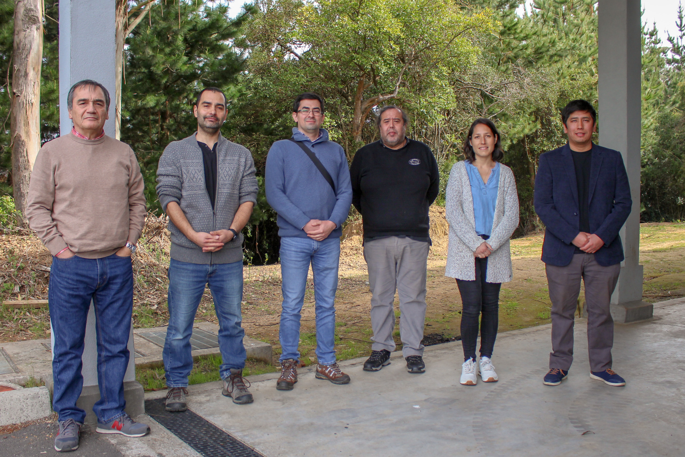

Grupo de Investigación en Análisis Numérico y Cálculo Científico (GIANuC²)
Encuentro GIANuC² 2025 |
El Encuentro GIANuC² 2025: Métodos Numéricos para Sistemas Multifísicos - Teoría y Aplicaciones, es un evento organizado por el Grupo de Investigación en Análisis Numérico y Cálculo Científico (GIANuC²) de la Facultad de Ingeniería, Universidad Católica de la Santísima Concepción, Chile. Se llevará a cabo el Viernes 3 de Octubre de 2025 en el Auditorio San José Obrero de la UCSC. Tiene como objetivo principal difundir la labor investigativa del GIANuC² a la comunidad universitaria local y externa.
El evento no tiene ningún costo, pero solo podrán participar en las actividades las personas inscritas y seleccionadas.
|
|
 Grupo de Investigación en Análisis Numérico y Cálculo Científico (GIANuC²) |